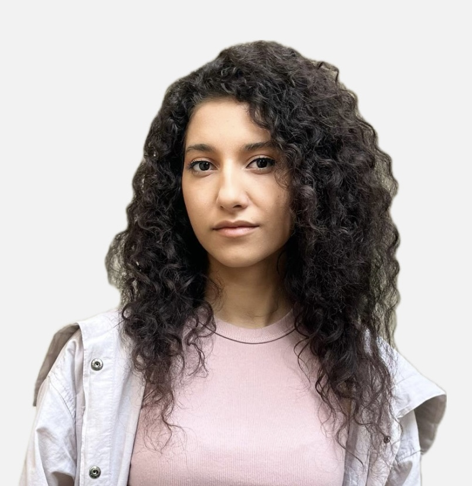

About Me
Researcher, Designer, Inventor
I am Katayoon Moslemi, an undergraduate student at Iran University of Science and Technology, pursuing advanced studies in computational design and design data analysis. My main focus lies at the intersection of Artificial Intelligence, design, and fabrication, where I am passionate about uncovering innovative possibilities. I am also deeply interested in exploring biomaterials, Robotics, and their potential applications.
Driven by my passion for design and technology, I’ve gained experience in various fields including computational and parametric design, kinetic and interactive systems, reciprocal and self-supported structures, bending active forms, truss analysis, graphic statics, plugin development, woodworking, molding, 3D printers, and laser-cut programming.
I have a passion for AI applications in architecture as I work in fields like machine learning, deep learning, generative design, and swarm intelligence. I’ve worked with a variety of ML modules and algorithms including Evolutionary, Genetic, Cellular Automata, Differential Growth, Perlin Noise, L-System, Reaction-Diffusion, Boids, Particle Swarm, Optimization, Ant Colony Optimization, ANN, CNN, AE, VAE, GAN, CGAN, etc.
To further enhance my value in this domain, I am dedicated to expanding my expertise in these fields, enabling me to push the boundaries of architectural design. With a strong vision for the future, I aim to apply my skills and knowledge to drive innovation in Space Architecture. By combining my passion for design and technology, I strive to find potential solutions for space habitats.
Fun Fact: I have no problem eating super hot chilies and my favorite sport is mounted archery!